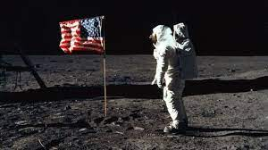

Many people think that the moon landing was fake, for various reasons.
Some people either believe it is fake due to their self-egoistic mindset of just proving that US faked the landing.
Other think it is wrong due to lighting effects and flag waving in moon. It is true, that the light was visible in the atronauts helmet,
but that was the sun in the bacground that was being reflected off the mask. Then the wave shouldn't wave on moon due to no wind.
But guess what? USA did think about this in the plan, so they placed metallic rods on the the flag to keep it straight. Hence the flag can wave on moon.
Upto the current date the footprints can still be seen on the moon.

2) Marijuana Planet
n 2016,
a fake news article claimed that NASA had discovered a planet covered in marijuana.
The story was widely shared on social media, but it was completely false.
The story was quickly debunked to due its unbelieveble fact. I mean it is widely known that marijuana is made by plants
and not by nature itself.
3) Parallel Universe
In 2017, a fake news story claimed that NASA had discovered a parallel universe where time runs backward.
The story was based on a real scientific study, but the findings were misinterpreted and exaggerated in the article.
This theory was quickly debunked by Nasa themselves as this topic was sensitive and affected Nasa directly. But if the parallel universe
was real, it would be great.
4) Asteroid Impact
In 2015, a fake news story claimed that an asteroid was going to hit Earth and cause a global catastrophe.
The story was based on a real asteroid that was passing. This thoery was debunked by many people, and even if it wasn't we would
know it by now as Earth didn't face any asteroid hits. People who believed in the news must've been scared out of their guts and
must be grateful to be alive right now.